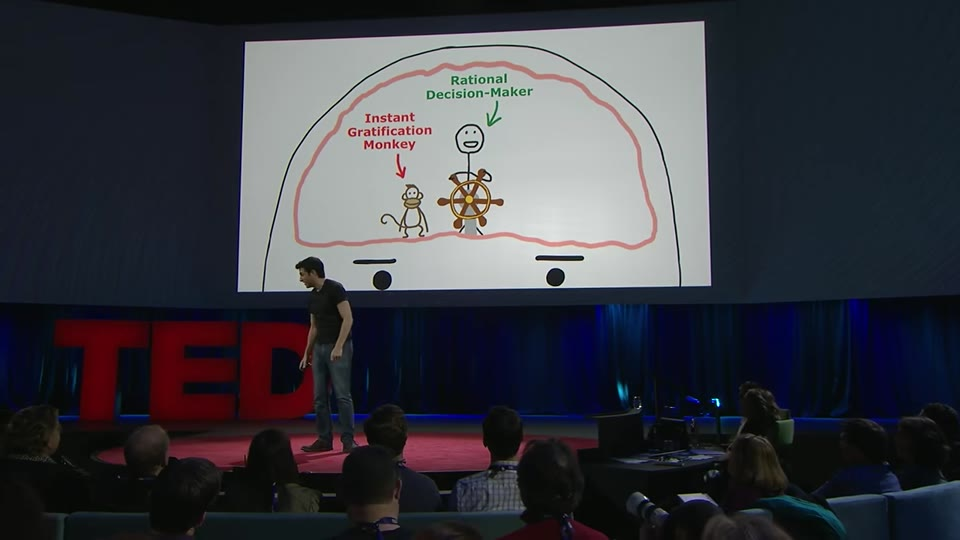
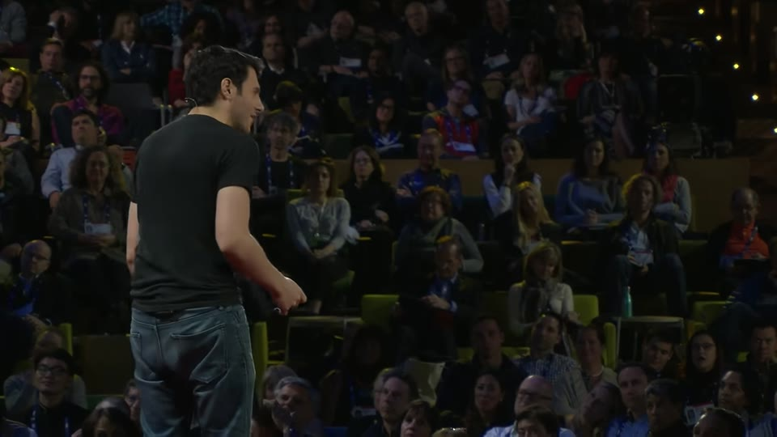
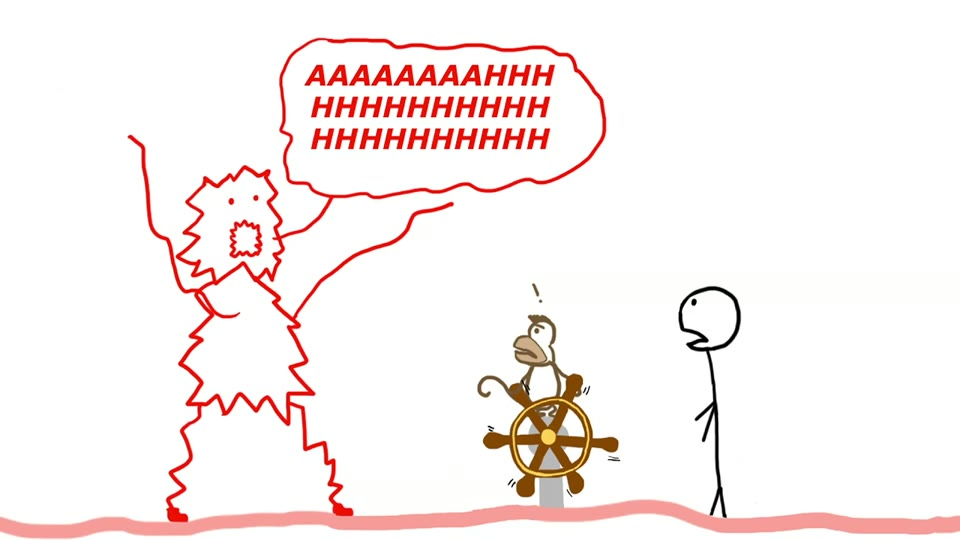

Inside the Mind of a Master Procrastinator | Tim Urban | TED
- 길이
- 14:04
- 글
- 업로더 자막 (en)
- 정리
- Claude Code
- 구간
- 3
개요
Tim Urban은 1년 동안 써야 했던 90쪽짜리 졸업논문을 마감 사흘 전까지 한 단어도 쓰지 못하다가 72시간 만에 몰아서 낸 경험으로 이야기를 시작한다. 그는 미루는 사람의 머릿속을 세 캐릭터로 설명한다. 장기 계획을 세우는 '이성적 결정자', 지금 쉽고 재미있는 것만 좇는 '즉각적 만족 원숭이', 그리고 마감이나 망신이 닥쳤을 때만 깨어나 원숭이를 쫓아내는 '패닉 몬스터'다. 마감이 있는 일이라면 이 시스템은 보기 좋지 않아도 결국 굴러가고, 피해도 짧은 기간에 그친다. 문제는 창작이나 창업, 가족, 건강, 인간관계처럼 마감이 없는 일이다. 이런 일에서는 패닉 몬스터가 깨어나지 않아 미루기가 끝없이 이어지고, 조용한 불행과 후회가 쌓인다. 블로그 글을 보고 수천 명이 보낸 절박한 이메일이 그 근거다. 그는 미루지 않는 사람은 없다고 결론짓고, 90년 인생을 한 주에 한 칸씩 그린 '인생 달력'을 보여 주며 남은 시간이 생각보다 적으니 무엇을 미루고 있는지 돌아보라고 권한다.
가져갈 것
- 미루는 사람의 머릿속에서는 장기 계획을 세우는 이성적 결정자와 지금의 즐거움만 좇는 즉각적 만족 원숭이가 충돌하고, 대개 원숭이가 이긴다.
- 놀면 안 될 때 노는 '어두운 놀이터'의 재미는 즐겁지 않고 죄책감, 불안, 자기혐오만 남긴다.
- 마감이 있는 일에서는 패닉 몬스터가 깨어나 결국 일을 해내게 만들기 때문에 피해가 단기간에 그친다.
- 더 위험한 것은 창작, 창업, 건강, 가족, 연애처럼 마감이 없는 일의 미루기다. 패닉 몬스터가 나타나지 않으니 피해가 끝없이 이어진다.
- 장기 미루기의 고통은 벼락치기가 아니라 자기 삶의 구경꾼이 된 느낌, 꿈을 쫓기 시작조차 못 했다는 답답함에서 온다.
- 모두가 미루는 사람이다. 마감을 잘 지키는 사람이라도 마감 없는 영역에서는 원숭이에게 당할 수 있다.
- 한 주를 한 칸으로 그린 인생 달력을 떠올리며, 자신이 무엇을 미루고 있는지 점검하고 오늘 시작해야 한다.



졸업논문 일화와 '즉각적 만족 원숭이'의 등장
- 보통 학생은 과제를 기간 전체에 나눠서 하지만, 정치학 전공이던 Tim Urban은 매번 계획만 세워 두고 실제로는 마감 직전에 몰아서 했다.00:19
- 1년 동안 써야 하는 90쪽짜리 졸업논문은 평소처럼 할 수 없다고 보고, 초반엔 가볍게 시작해 계단처럼 작업량을 늘려 가는 계획을 세웠다.00:51
- 하지만 첫 몇 달도, 중간 몇 달도 거의 쓰지 못한 채 지나갔고, 그때마다 계획만 새로 고쳤다.00:24
- 마감 사흘 전까지 한 단어도 쓰지 못했고, 결국 72시간 동안 밤을 두 번 새워 90쪽을 써서 마감에 겨우 냈다.00:47
- 학교에서 '역대 최고의 논문'이라는 연락을 받았다는 농담을 한 뒤, 사실은 아주 형편없는 논문이었다고 밝혔다.02:25
- 지금은 블로그 Wait But Why를 쓰고 있으며, 미루지 않는 사람들에게 미루는 사람의 머릿속에서 무슨 일이 일어나는지 설명하려고 미루기에 관한 글을 썼다.02:55
- 미루는 사람의 뇌는 다르다는 가설을 세우고, 자신의 뇌와 미루지 않는 사람의 뇌를 MRI로 찍어 비교했다는 설정으로 두 뇌 그림을 보여 주었다. 두 뇌 모두 '합리적 의사결정자(Rational Decision-Maker)'가 있지만, 미루는 사람의 뇌에는 '즉각적 만족 원숭이(Instant Gratification Monkey)'도 있다.03:34
- 합리적 의사결정자가 생산적인 일을 하기로 하면 원숭이가 운전대를 빼앗는다. 그러고는 위키백과의 Nancy Kerrigan·Tonya Harding 사건 문서 읽기, 10분 전에 열어 본 냉장고 다시 열기, Richard Feynman 영상에서 시작해 Justin Bieber 엄마 인터뷰로 끝나는 YouTube 연쇄 시청 때문에 오늘은 일할 시간이 없다고 한다.04:12


원숭이, 이성적 결정자, 패닉 몬스터의 구조
- 즉각적 만족 원숭이는 현재만 살고 과거도 미래도 모른다. 원숭이가 신경 쓰는 것은 '쉽고 재미있는 것'뿐이다. 동물 세계나 부족 시대에는 이 방식이 통했지만, 원숭이는 발전된 문명이 무엇인지 모른다.05:03
- 그래서 뇌에는 '이성적 결정자(Rational Decision-Maker)'가 따로 있다. 미래를 그려 보고, 큰 그림을 보고, 장기 계획을 세워 지금 해야 맞는 일을 하려 한다.05:45
- 식사나 수면, 정당하게 얻은 여가처럼 둘의 생각이 겹칠 때도 있다. 하지만 큰 그림을 위해 힘들고 덜 즐거운 일을 해야 할 때는 둘이 충돌한다.06:06
- 미루는 사람은 이 충돌에서 늘 원숭이가 이긴다. 그래서 '말이 되는 일' 영역 밖에 있는 '어두운 놀이터(Dark Playground)'에서 오래 머문다. 놀면 안 될 때 노는 곳이라 노력 없이 얻은 재미는 즐겁지 않고, 죄책감·불안·자기혐오가 가득하다.06:28
- 미루는 사람에게는 '패닉 몬스터(Panic Monster)'라는 수호천사가 있다. 평소에는 잠들어 있다가 마감이 다가오거나 망신·커리어 위기가 닥치면 깨어난다. 원숭이가 유일하게 무서워하는 존재다.07:17
- TED 강연 일화: 6개월 전에 초대를 수락했을 때 이성적 결정자는 바로 준비하자고 했다. 하지만 원숭이는 구글 어스로 인도 남쪽 끝에서 북쪽 끝까지 2시간 반 동안 스크롤했다. 연사 명단에 자기 얼굴이 공개되자 패닉 몬스터가 깨어났고, 원숭이는 나무 위로 도망쳤다. 그제야 이성적 결정자가 운전대를 잡고 준비를 시작했다.07:56
- 패닉 몬스터로 미루는 사람의 이상한 행동이 설명된다. 2주 동안 논문 첫 문장도 못 쓰다가 하룻밤 새워 8페이지를 쓰는 식이다. 세 캐릭터로 된 이 시스템은 보기 좋지 않지만 결국은 작동한다.09:37
- 몇 년 전 이 내용을 블로그에 쓰자 간호사, 은행원, 화가, 엔지니어, 수많은 박사과정생 등 전 세계에서 '나도 그렇다'는 이메일이 수천 통 왔다. 놀라웠던 것은 글의 가벼운 톤과 달리 이메일들이 미루기가 삶에 끼친 피해를 담아 매우 무겁고 절박했다는 점이다.10:05
화면에서 읽은 것
- 09:17슬라이드 그림: 빨간 털북숭이 괴물(패닉 몬스터)이 'AAAAAAAAAHHHHHHHHHHHHHHHHHHHHHHH'라고 소리치고, 배의 조타륜을 잡은 원숭이가 놀라고(머리 위 '!'), 옆에 막대 인간(이성적 결정자)이 서 있다.

마감 없는 장기 미루기와 인생 달력
- 미루기에는 두 종류가 있다. 지금까지 든 예는 모두 마감이 있는 경우였고, 이때는 패닉 몬스터가 나타나서 미루기의 피해가 단기간에 그친다.10:55
- 두 번째는 마감이 없는 상황의 미루기다. 예술가나 창업가처럼 스스로 일을 시작해야 하는 경력은 직접 힘들게 추진력을 만들기 전까지는 마감이 없다.11:10
- 가족 만나기, 운동과 건강 관리, 연애를 가꾸거나 맞지 않는 관계를 끝내는 일처럼 일 밖의 중요한 일도 마감이 없다.11:27
- 패닉 몬스터가 유일한 동력이라면, 마감이 없는 상황에서는 몬스터가 깨어나지 않으니 미루기의 피해가 끝없이 이어진다.11:39
- 이런 장기 미루기는 웃긴 마감형보다 눈에 덜 띄고 덜 이야기된다. 대개 혼자 조용히 겪으며, 오래가는 불행과 후회의 큰 원인이 된다.11:57
- 그에게 이메일을 보낸 사람들이 괴로운 이유도 여기에 있다. 벼락치기 때문이 아니라 자기 삶의 구경꾼이 된 듯한 느낌 때문이고, 꿈을 이루지 못해서가 아니라 쫓기 시작조차 못 해서 답답한 것이다.12:16
- 결론: 미루지 않는 사람은 없고 모두가 미루는 사람이다. 마감을 잘 지키는 사람이라도, 원숭이의 가장 교활한 수법은 마감이 없을 때 나온다.12:36
- '인생 달력(Life Calendar)'을 보여 준다. 90년 인생을 한 주에 한 칸씩 그린 것으로, 칸이 생각보다 적고 이미 써 버린 칸도 많다. 각자 무엇을 미루고 있는지 돌아보고 즉각 만족 원숭이(Instant Gratification Monkey)를 늘 경계해야 하며, 남은 칸이 많지 않으니 오늘 시작해야 한다고 말한 뒤 '오늘은 말고, 곧'이라는 농담으로 끝맺는다.13:05
화면에서 읽은 것
- 13:05인생 달력 화면은 흰 바탕에 작은 빈 네모 칸만 빽빽하게 격자로 깔려 있다. 글자나 축 표시는 없고, 이 시점에는 이미 써 버린 칸도 따로 칠해져 있지 않다.